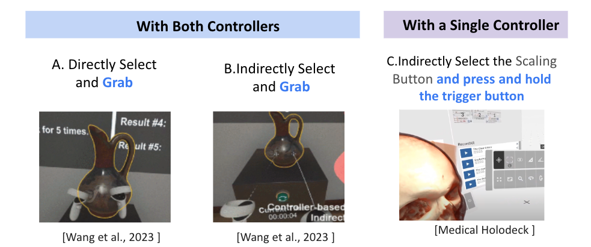
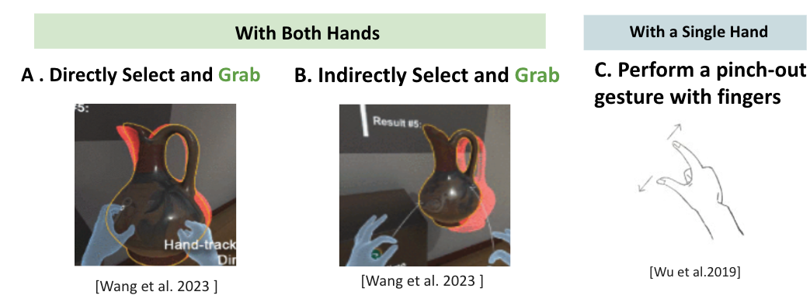
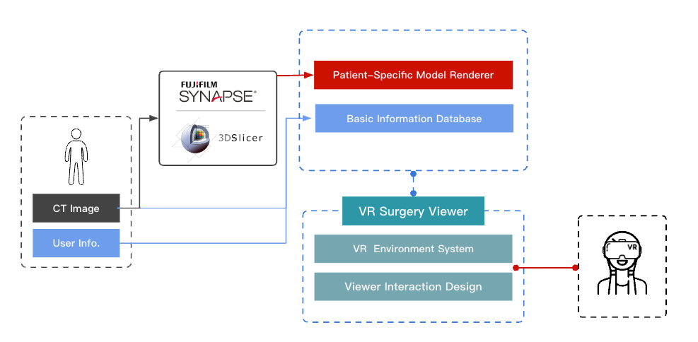
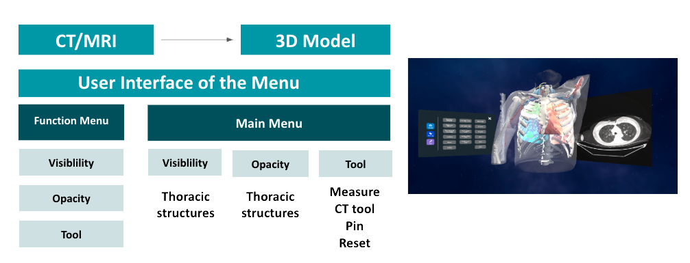
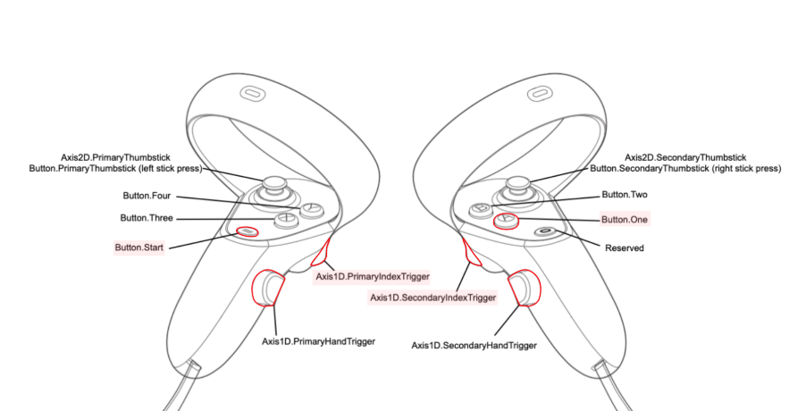
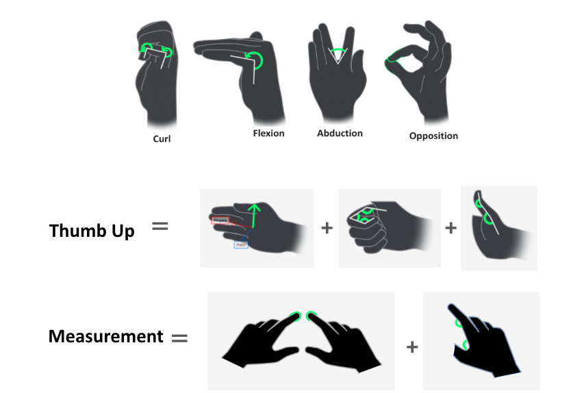
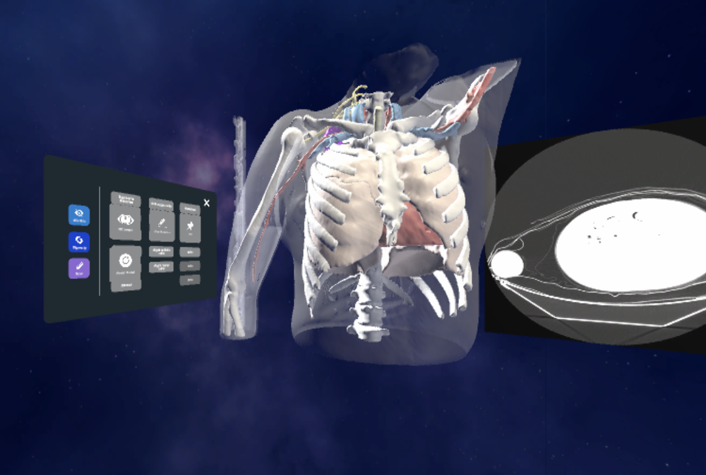
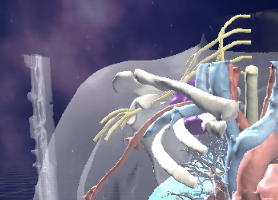
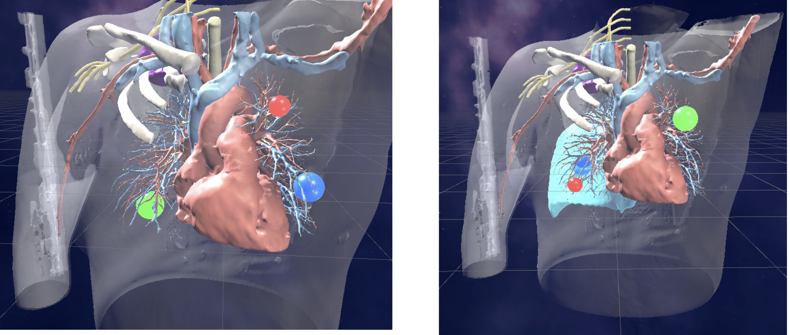

2D textbooks can't show the space a surgeon has to plan in.
Traditional surgical anatomy education relies on cadavers, physical models, or 2D textbook illustrations. For thoracic surgical planning, surgeons need to precisely understand the 3D spatial relationships between organs, lesions, and vessels — something 2D media struggles to convey.
This research project explores how VR can bridge that gap: reconstructing 3D thoracic anatomy models from real patient CT data, designing two complete input modalities, and building three medical-specific tools to enhance spatial comprehension and interaction efficiency in anatomy learning.
One system, two very different ways to use it.
- Dual-modal consistency. Controller and gesture carry different operational instincts — both had to support every feature while keeping the usage logic coherent.
- Gesture precision. Measurement tools require high spatial accuracy, but gesture detection introduces variability that affects measurement reliability.
- 3D spatial UI. Menus and tools operate in 3D space — they must not occlude the anatomy model while keeping the user's gaze flow natural.
Two interaction paradigms, studied before designing.
I analyzed common interaction patterns in existing VR applications across two directions — controller-based and gesture-based — as the foundation for design.
Controller-based interaction — explicit button feedback, predictable precision
- Translation & rotation. Moving the controller changes the object's position and orientation at once — two operations in one gesture.
- Scaling. Moving controllers along a specific axis adjusts the object's size.

Hand-gesture interaction — intuitive and natural, but precision-critical tasks are harder
- Translation & rotation. Moving the hand changes position and orientation at once — same logic as controllers, minimizing the learning curve.
- Scaling. Pinch-hold with both hands and expand or contract to adjust size.

Starting from CT data, with six operations mapped across both modalities.
Starting from patient CT data, the VR environment integrates the anatomy models with interactive tools. Six operations are mapped across both modalities, with consistent underlying logic.


Controller button mapping
- Direct selection. Move the controller close to the desired object.
- Indirect selection. Aim the ray at the desired object.
- Trigger. PrimaryIndexTrigger or SecondaryIndexTrigger.
- Grab. PrimaryHandTrigger or SecondaryHandTrigger.
- Menu. Button.Start.
- Measurement. Button.One.

Hand-gesture mapping
- Direct selection. Move the hand close to the desired object.
- Indirect selection. Aim the ray indicator (points only, no line) at the object.
- Trigger. After selecting, pinch and release.
- Grab. After selecting, pinch and hold.
- Bring up menu. Left-hand thumb-up gesture.
- Measurement. Touch index fingers together to start; move them to draw the measurement line.

Both modalities, identical translate, rotate, and scale.
Translation & Rotation
Controller: direct select and grab
Translation & Rotation
Gesture: direct select and pinch-hold
Scaling
Controller: grab with both controllers
Scaling
Gesture: pinch-hold with both hands
Three medical-specific tools for anatomy learning.
Controller
Measurement Tool
Press the measurement button, move the controller to draw the line, release to complete.
CT Viewer Tool
Grab the red panel and move the controller vertically to browse CT slices.
Material Replacement Tool
Select the button to change model material (opacity).
Hand gesture
Measurement Tool
Touch index fingers together to start; trigger with the right hand to complete.
CT Viewer Tool
Grab the red panel and move the hand vertically to browse CT slices.
Material Replacement Tool
Select the button to change model material (opacity).
Validated with a structured, mixed-methods test.
A structured user-testing process combining quantitative and qualitative methods evaluated the system's usability and learning support.
Core tasks aligned with learning objectives — identifying lesion locations, measuring distances, and completing specific operations. Participants performed them in VR, with three quantitative metrics collected as design-validity indicators.

Task 1
Identifying lesion locations

Task 2
Measuring distances

Task 3
Completing specific operations
SUS and USEQ quantified subjective impressions of the interface and experience; post-test interviews gathered qualitative insight on emotions, challenges, and improvement ideas. Both modalities scored positively; gesture interaction rated well on intuitiveness, but measurement accuracy still has room to improve.
Designing two input modalities in parallel gave me a real feel for the complexity of "same function, different interaction instinct." Controllers offer explicit feedback and precision; gestures feel natural, but in precision-critical contexts like measurement, stability is the real challenge. Both scored well — yet "natural feel" and "precision" are sometimes not the same thing, and that divergence is itself a meaningful finding that points straight at the next problem to solve: assistive visual cues or redesigned gestures to improve measurement precision, separate manipulation of individual thoracic structures, and expert-guided, replayable lessons for self-directed learning.